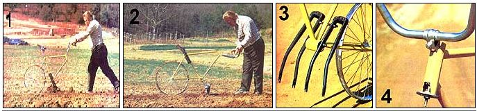

Just about three years ago (in the July/August 1981 issue), William and Jimmie Ruttencutter explained how they turned what they'd thought was a useless discarded bicycle - into the Fabulous Bullwinkle Garden Cultivator, a preposterous-looking - but totally effective - push-driven horticultural tool.
Recently we asked our resident junkophile, Dennis Burkholder, to exercise his imagination and try to develop some wheeled weeders of his own design - and though he came up with several viable loam looseners, the version that proved to be the easiest to piece together (and seemed to do the most between the rows) was simply a reincarnation of that old "velocipedes for vegetables" theme!
Now Dennis certainly wasn't trying to show up the Ruttencutters when he built his "Fabulous Burkholder Garden Cultivator," but we think that even those kind folks will have to admit that this second cousin to Bullwinkle is an improvement on the old "moose." It's easier to build and a bit more sturdy once put together, because the original bike frame remains intact.
In fact, the only drawback we can think of with the Burkholder design is that you'll need parts from two bicycles - or at least the front fork from a second one - to make the machine. But as Dennis points out, the components needn't be suitable for cycling, so "junk" is perfectly acceptable (though he does recommend that the wheel be fairly straight and possess enough spokes to keep it that way when in use).
The tool's construction couldn't be much simpler. To start, Dennis took a men's 26-inch bike and removed the front fork assembly, handlebar stem, crankset, brakes and cables, and both wheels from the frame. He then located a fork assembly from a second 26-inch bicycle and, using a hacksaw, cut the fork stems from both front wheel holders. (The stem is the tubular stub that fits into the head tube, or neck, of the bike. It's fairly difficult to saw through, so you might want to just leave both stems intact, since they won't be in the way.)
Next, he drilled a 3/8-inch hole crosswise through the seat tube at a point about 4 inches above its junction with the bottom bracket, then temporarily positioned the two bare forks - backward but prongs down - at either side of that frame member so that their four tubes protruded beneath the bottom bracket by 8 inches or so. By drilling through the innermost tubes at points in line with the 3/8-inch seat tube bore and the opening in the bottom bracket, he was able to lock the fork sets to the frame, using two 3/8-by-5 1/2-inch lengths of threaded rod and four nuts with lock washers.
With this done, Burkholder again grabbed his hacksaw and laid into the bike's head tube, this time cutting two 1-inch-wide by 1-inch-deep V-shaped notches into the forward part of each end of the neck. (Naturally, the two head bearing cups had to be tapped out of the frame before he attempted this surgery.) These slots enabled him to lock the handlebar clamp and stem firmly into the bike's head tube with a 1/4-by-6-inch bolt drawn up against a 1/4-inch-pipe floor flange placed at the opposite end of the tube. With the high-rise handlebars turned around and reinserted in the clamp, the assembly was in an ideal position for some serious shoving.
If you're wondering why there are notches in the upper and lower ends of the neck, take a look at the bike's seat: By turning it backward and tilting its nose upward sharply, Dennis was able - once he'd bolted the front wheel to the rear of the frame - to effect a pretty good row marker in addition to a cultivator, but that option requires that the handlebars be inserted from the bottom rather than the top of the neck. Several of our testers, however, found it just as easy to save a notch-cut and leave the handles fixed for both tasks.
Actually, we can't blame Dennis at all for being downright proud of his interpretation of William and Jimmie's original concept, and it's probably doubly rewarding for him to see his creation being used regularly by the folks responsible for Mother's own Eco-Village gardens!
(1) 1/4"-pipe floor flange
(1) 1/4-by-16" bolt w/nut and flat washer
(2) 26" bicycle front forks
(2) 3/8-by-5 1/2" threaded rods w/nuts and washers
(1) 26" men's bicycle frame w/seat and handlebar clamp
(1) 26" bicycle front wheel
(1) high-rise handlebar set w/grips
|
 MOTHER EARTH NEWS STAFF [1] Dennis's recycled cycle makes a terrific cultivator, and [2] a row marker, as well. [3] The bicycle-fork tines are fastened to the lower part of the frame with threaded rods. [4] Notche's cut into the head tube provide a socket for the handlebar clamp. |
|
|